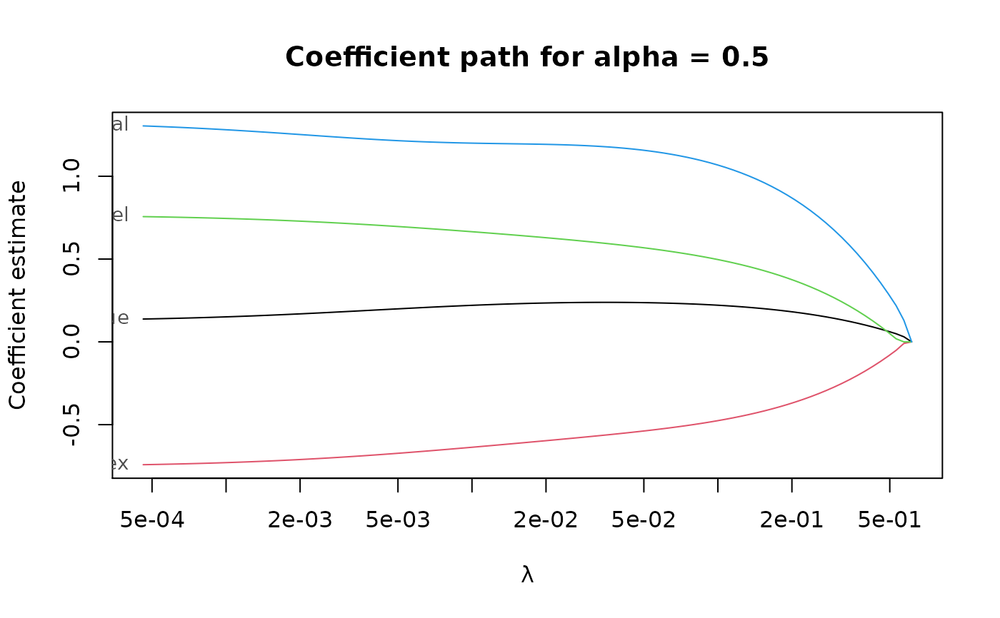
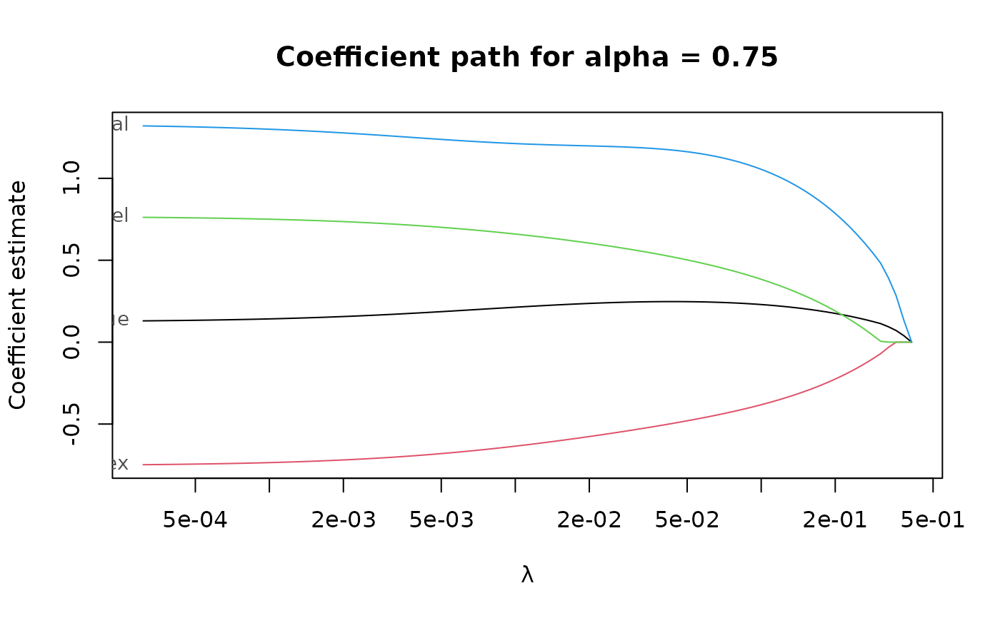

Compute least squares EN estimates for linear regression with optional observation weights and penalty loadings.
elnet(
x,
y,
alpha,
nlambda = 100,
lambda_min_ratio,
lambda,
penalty_loadings,
weights,
intercept = TRUE,
en_algorithm_opts,
sparse = FALSE,
eps = 1e-06,
standardize = TRUE,
correction = deprecated(),
xtest = deprecated(),
options = deprecated()
)n by p matrix of numeric predictors.
vector of response values of length n.
For binary classification, y should be a factor with 2 levels.
elastic net penalty mixing parameter with \(0 \le \alpha \le 1\).
alpha = 1 is the LASSO penalty, and alpha = 0 the Ridge penalty.
Can be a vector of several values, but alpha = 0 cannot be mixed with other values.
number of penalization levels.
Smallest value of the penalization level as a fraction of the largest
level (i.e., the smallest value for which all coefficients are zero).
The default depends on the sample size relative to the number of variables and alpha.
If more observations than variables are available, the default is 1e-3 * alpha,
otherwise 1e-2 * alpha.
optional user-supplied sequence of penalization levels.
If given and not NULL, nlambda and lambda_min_ratio are ignored.
a vector of positive penalty loadings (a.k.a. weights) for different penalization of each coefficient.
a vector of positive observation weights.
include an intercept in the model.
options for the EN algorithm. See en_algorithm_options for details.
use sparse coefficient vectors.
numerical tolerance.
standardize variables to have unit variance. Coefficients are always returned in original scale.
defunct. Correction for EN estimates is not supported anymore.
defunct.
deprecated. Use en_algorithm_opts instead.
a list-like object with the following items
alphathe sequence of alpha parameters.
lambdaa list of sequences of penalization levels, one per alpha parameter.
estimatesa list of estimates. Each estimate contains the following information:
interceptintercept estimate.
betabeta (slope) estimate.
lambdapenalization level at which the estimate is computed.
alphaalpha hyper-parameter at which the estimate is computed.
statuscodeif > 0 the algorithm experienced issues when
computing the estimate.
statusoptional status message from the algorithm.
callthe original call.
The elastic net estimator for the linear regression model solves the optimization problem
$$argmin_{\mu, \beta} (1/2n) \sum_i w_i (y_i - \mu - x_i' \beta)^2 + \lambda \sum_j 0.5 (1 - \alpha) \beta_j^2 + \alpha l_j |\beta_j| $$
with observation weights \(w_i\) and penalty loadings \(l_j\).
pense() for an S-estimate of regression with elastic net penalty.
coef.pense_fit() for extracting coefficient estimates.
plot.pense_fit() for plotting the regularization path.
Other functions for computing non-robust estimates:
elnet_cv()
# Compute the LS-EN regularization path for Freeny's revenue data
# (see ?freeny)
data(freeny)
x <- as.matrix(freeny[ , 2:5])
regpath <- elnet(x, freeny$y, alpha = c(0.5, 0.75))
plot(regpath)

plot(regpath, alpha = 0.75)

# Extract the coefficients at a certain penalization level
coef(regpath, lambda = regpath$lambda[[1]][[5]],
alpha = 0.75)
#> (Intercept) lag.quarterly.revenue price.index
#> 9.306304 0.000000 0.000000
#> income.level market.potential
#> 0.000000 0.000000
# What penalization level leads to good prediction performance?
set.seed(123)
cv_results <- elnet_cv(x, freeny$y, alpha = c(0.5, 0.75),
cv_repl = 10, cv_k = 4,
cv_measure = "tau")
#> Error in h(simpleError(msg, call)): error in evaluating the argument 'x' in selecting a method for function 'drop': non-conformable arguments
plot(cv_results, se_mult = 1.5)
#> Error in plot(cv_results, se_mult = 1.5): object 'cv_results' not found
plot(cv_results, se_mult = 1.5, what = "coef.path")
#> Error in plot(cv_results, se_mult = 1.5, what = "coef.path"): object 'cv_results' not found
# Extract the coefficients at the penalization level with
# smallest prediction error ...
summary(cv_results)
#> Error in h(simpleError(msg, call)): error in evaluating the argument 'object' in selecting a method for function 'summary': object 'cv_results' not found
coef(cv_results)
#> Error in coef(cv_results): object 'cv_results' not found
# ... or at the penalization level with prediction error
# statistically indistinguishable from the minimum.
summary(cv_results, lambda = "1.5-se")
#> Error in h(simpleError(msg, call)): error in evaluating the argument 'object' in selecting a method for function 'summary': object 'cv_results' not found
coef(cv_results, lambda = "1.5-se")
#> Error in coef(cv_results, lambda = "1.5-se"): object 'cv_results' not found